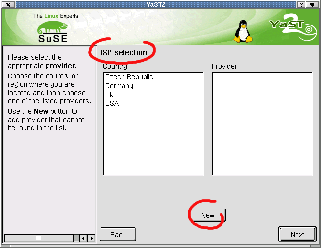
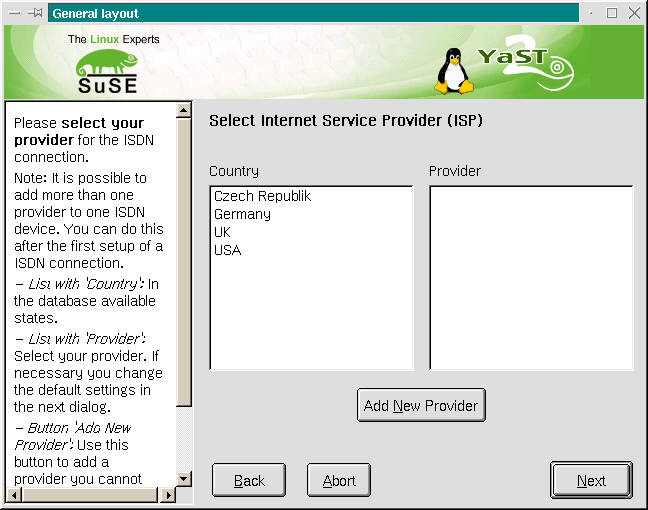
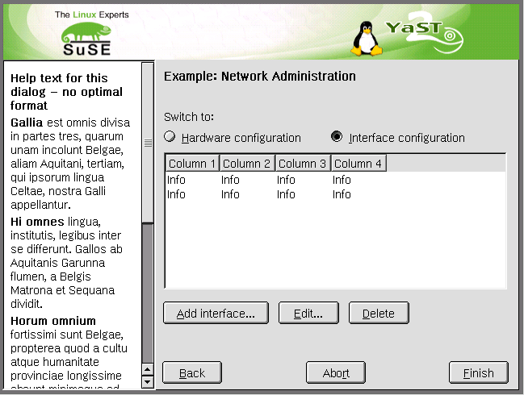
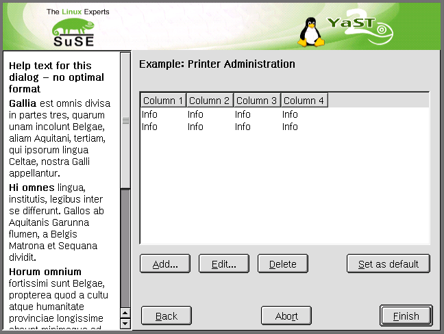
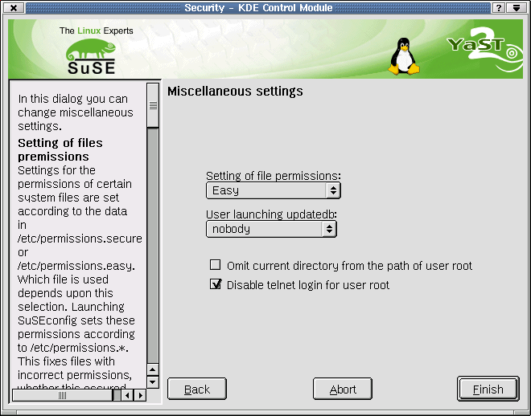
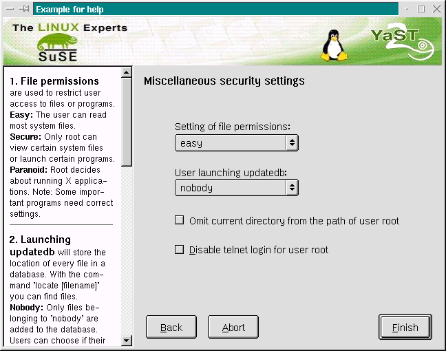
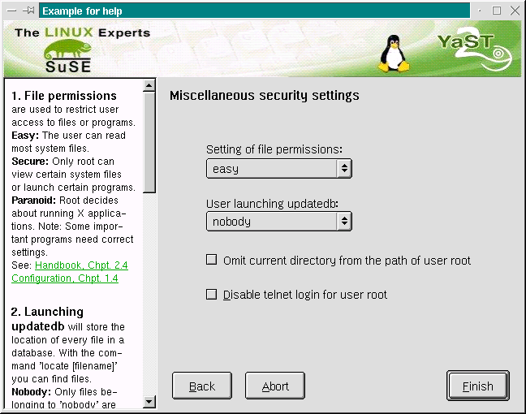

[previous page] --- [back to index] --- [next page]
[previous
page] --- [back
to index] --- [next
page]
General thoughts
Dialog captions
Labels of dialog
elements
Short cut keys
List of keywords
Beware of language,
including some hints for Denglish speakers (German-English
speakers)
Making a good help text
YaST2 checklist for text
elements in the dialog
The ultimate goal concerning the text elements in the YaST2 dialogs is: A clear & consistent use of text
The advantages are obviously: After an obligatory phase of training...
Identification of dialog elements
Appraisal of dialog contents
Communication on dialog contents
will be a lot easier.
High consistency in using standardized terminology will cause less cognitive effort for user while using YaST2. In main, the suitability for the task will be better by
higher self-descriptiveness
higher controllability
higher conformity with user expectations.
A standardized terminology will even reduce efforts during the creation of YaST2.
So everything should have a clear name without ambiguity.
The modules itself
The main function of the dialogs
The dialog pages
The dialog elements like help window, message boxes and all kind of control elements
Demands for further co-working are...
Demands for further co-working
Creating of a standardized naming list
Native speaker have to make the final reviews according to existing style guides
Hint: It is better to name a thing good and quick than to try naming a thing perfect but never.
The caption of the dialogs are essential for the users understanding and a correct assignment during support.
Check 1: No recurrence! Every dialog page has its own identifiable caption.
Check 2: Use few words if possible.
If necessary, use the whole line to make a short description of the function of the dialog.
Take the long French translations into your considerations.
Always get help from a native speaker!
With a good caption there is no need for an additional explanation in the help window. Describe the main function of the dialog with one sentence.
Check 3: Abbreviations are not usable.
Check 4: The Caption of the dialog has the layout of a 'Sentence style capitalization' according to the specific language (the former 'Book Title Capitalization' has been dropped for easy handling with different languages). Note: Pop up boxes should also use 'Sentence style capitalization' in their caption.

Example
of a first draft during development process

Redesign
with
better caption - Note: This caption is in the old style - correct: 'Select internet service provider (ISP)'
a 'speaking button' for 'Add' - Note: The button label 'Add New Provider' is wrong. Correct: 'Add new provider...'
There are a lot of dialog elements with different labels. Our goal is, to add an individual identifier to every control element, where possible in form of 'speaking language'.
Check 1: Use an 'active voice' to describe the function of this element and try to create a balance between shortness and necessary length of description (see ' screen shots' above!).
Example: 'Save settings to floppy disk' is a long caption for a button, but the text describes exactly the doing and is better as 'Save'
Check 2: Avoid abbreviations
Example: 'Save settings to fd' - the untrained user do not know what 'fd' means.
Check 3: The labels of the dialog elements have 'Sentence style capitalization'.
Correct: 'Add new provider...'
Wrong: 'Add New Provider...'
Check 4: If the button leads to a new dialog try to name the caption of the button and the caption of the following dialog similar!
Example from 7.1: Button
caption 'Select single packages...' -> Dialog caption 'Software
single selection'
Better: Button caption 'Manual software
selection...' -> Dialog caption 'Manual software selection'
A Mnemonic Shortcut Key (MSK) is a single, easy to remember alphanumeric key, when used in combination with the ALT-key, moves the cursor to a choice and selects the choice. MSK should be provided for each choice in a field.
Normaly in YaST2 all possible commands are shown in the dialog area. To this time there is no access to a function without a visible reference on the display like 'F1' to start a help window. YAST2 does also not provide the use of Accelerator Keys (CTRL/Shift + letter combinations).
Note: It is not possible to find a perfect shortcut key solution. There are many of dialogs with a lot of commands. Remember, in a GUI the mouse will be used more than the shortcut keys. So the use of shortcut keys in this context is the second alternative. The fact, experts can work more quick with key access is another discusson.
Check 1: Do really all buttons, checkboxes, radio buttons list views have a special short cut key for direct access by keyboard?
Check 2: Have the frequently used commands the right shortcut key?
Check 3: Use the first character of the label for the choice, or the first character of one of the words in a multiple-word choice, unless those characters have been assigned as MSK for other choices or another character provides a better mnemonic association.
If the first character of a choice label has been used as the MSK for another choice, use a distinctive consonant in the choice label
If all consonants in a choice label have been used as the MSK for other choices, use any other character - mostly vowels - in the choice label.
If all characters in a choice label have been used for other choices:
First possibility: Add a new word to the choice label and use a character in this word.
Second but not so fine: Add a unique character to the choice text and make it the MSK. Display the character in parentheses after the choice.
Check 4: Use a wide letter if possible and avoid letters with descender (german : Unterlaengen) like 'j', 'p' and 'g'. Worst cases are 'i', 'I', 'l', 'j', 't' but sometimes you must use one of this letters. E.g. the German 'Ja' or 'Installation'. Example: 'Compute' is better than 'Compute' or 'Compute'.
Check 5: Are there double short cut keys? A MSK should be unique within the field of its interaction. For this reason the use of identical MSK is permitted unless assigned Push buttons appear within the same field. If duplicate MSK are assigned within the same field, the first choice is activated, when the MSK is pressed. Depending on the choice, pressing the MSK a second time may or may not activate another choice with the same assignment. But this bug will not appear in our YaST2! ;-)
See comments for yet unsolved problems:
bold font = main function button (see tables below) - the shortcut key should not be changed
* = comment
*** = problem
|
ENGLISH |
COMMENT |
GERMAN |
COMMENT |
|---|---|---|---|
|
Abort*** |
'Add' and perhaps 'Apply' are more important commands than Abort -> shortcut key is 'r' |
Abbrechen*** |
Problem 'Abort cancel' -> 'Abbrechen abbrechen'; 'b' is used in 'Beenden' |
|
Add |
|
Hinzufügen |
|
|
Apply |
|
Übernehmen* |
Anwenden as alternative |
|
Back |
|
Zurück |
|
|
Cancel |
|
Abbrechen |
|
|
Change |
|
Bearbeiten*** |
Bad translation, is 'Ändern' better? |
|
Choose |
|
Vorschlagen*** |
Wrong translation in .po-files? Is 'Auswählen' better? |
|
Close |
|
Schließen |
|
|
Continue |
|
Weiter* |
Fortfahren? |
|
Configure |
|
Einrichten |
|
|
Create |
|
Anlegen |
|
|
Delete |
|
Löschen |
|
|
Description |
|
Beschreibung |
|
|
Details |
|
Details |
|
|
Deselect*** |
Better 'Cancel the selection' |
Abwählen |
Is this better? 'Auswahl aufheben' |
|
Discard |
|
Verwerfen |
|
|
Edit |
|
Bearbeiten |
|
|
Eject |
|
Auswerfen |
|
|
Finish |
|
Beenden |
|
|
Format |
|
Formatieren |
|
|
Help |
|
Hilfe |
|
|
Info |
|
Info |
|
|
Install*** |
Alternative: 'Setup' |
Installieren |
Alternative: 'Einrichten' |
|
Launch module |
|
Modul starten |
|
|
Manual |
|
Manuell |
|
|
New |
In most cases we have a button labeled 'Next' in the dialog -> shortcut key is 'w' |
Neu |
|
|
Next |
|
Weiter |
|
|
No |
|
Nein |
|
|
OK |
|
OK |
|
|
Options |
|
Optionen |
|
|
Quit |
|
Ende |
|
|
Remove |
|
Entfernen |
|
|
Rename |
|
Umbenennen |
|
|
Restore |
|
Wiederherstellen |
|
|
Reset |
|
Zurücksetzen |
|
|
Retry |
|
Wiederholen |
|
|
Save |
|
Speichern |
|
|
Search |
|
Suchen |
|
|
Select |
|
Auswählen |
|
|
Select/Deselect |
|
Aus-/Abwählen |
|
|
Set |
|
Anwenden |
|
|
Set as default |
|
Als Standard festlegen |
|
|
Show |
|
Anzeigen |
|
|
Skip |
|
Überspringen |
|
|
Stop |
|
Anhalten |
|
|
Test |
|
Test |
|
|
Yes |
|
Ja |
|
In the workflow
|
English |
Back |
Abort |
Next |
|
German |
Zurück |
Abbrechen |
Weiter |
|
French |
|
|
|
|
Spanish |
|
|
|
|
Italian |
|
|
|
|
Dutch |
|
|
|
In a modal dialog
|
English |
Back |
Abort |
OK |
|
German |
Zurück |
Abbrechen |
OK |
|
French |
|
|
|
|
Spanish |
|
|
|
|
Italian |
|
|
|
|
Dutch |
|
|
|
At the end of the workflow
|
English |
Back |
Abort |
Finish |
|
German |
Zurück |
Abbrechen |
Beenden |
|
French |
|
|
|
|
Spanish |
|
|
|
|
Italian |
|
|
|
|
Dutch |
|
|
|
* If there is enough space in the dialog, Add should be a 'speaking button' like 'Add soundcard...'
Example with device overview

Example for special situation with additional button 'Set as default'

Here is still some work to do! Our goal Make it more clear and shorter for more consistency
|
English |
German |
French |
Spanish |
Italian |
Dutch |
|---|---|---|---|---|---|
|
&Abort |
&Abbrechen
|
&Annuler
|
&Abortar
|
&Abbandona
|
&Afbreken
|
|
Activate %1... &Activate/Inactivate |
%1 aktivieren... &Aktivieren/Nicht aktivieren |
Activer \n le %1.. &Activer/désactiver |
Activar %1... &Activar/Desactivar |
Attivare %1... &Attivare/Disattivare |
Activeer
%1... |
|
&Add |
&Hinzufügen
|
&Ajouter
|
&Añadir
|
&Aggiungi
|
&Toevoegen
|
|
&Apply |
Üb&ernehmen |
A&ppliquer |
&Aplicar |
A&pplica |
&Toepassen |
|
&Back |
&Zurück |
&Retour |
&Atrás |
&Indietro |
&Terug |
|
Callback settings |
&Rückruf-Einstellungen |
Configuration rappel |
Configuración
de devolución |
Impostazioni callback |
Callback instellingen |
|
&Cancel |
&Abbrechen
|
&Annuler
|
&Cancelar
|
&Annulla
|
&Annuleren
|
|
&Card |
&Karte |
&Carte |
&Tarjeta |
&Scheda |
&Kaart |
|
&Change |
&Bearbeiten |
&Editer |
&Cambiar |
- |
- |
|
&Choose |
&Vorschlagen |
&Choisir |
Es&coger |
&Choose *) |
&Kiezen |
|
&Close |
S&chließen |
&Fermer |
&Cerrar |
&Chiudi |
&Sluiten |
|
Configure
&Printer... |
&Drucker
konfigurieren... |
Configuration
de l'im&primante...
|
Configuración de im&presoras... Configuración del &sonido... Configuración de &Internet Configuración de &red |
Impostare la
&stampante Impostare l'&audio
|
&Printer
configureren... |
|
C&ontinue |
&Weiter
|
C&ontinuer
|
C&ontinuar
|
&Continuare
|
D&oorgaan
|
|
&Continue
Installation |
Installation
&fortsetzen |
&Continuer
l'installation |
&Continuar la Instalación &Continuar actualización |
&Continuare l'installazione &Continuare l'aggiornamento |
&Doorgaan
met installeren |
|
&Create |
A&nlegen |
&Créer |
&Crear |
&Creare |
&Aanmaken |
|
&Custom
LILO installation... |
&Andere
Konfiguration... |
A&utre
configuration de LILO... |
Instalación
&manual de LILO...
|
&Configurazione personalizzata di LILO... &Configurazione personalizzata di SILO... |
&LILO
configuratie op maat... |
|
&Delete |
&Löschen
|
E&ffacer
|
&Borrar
|
C&ancellare
|
&Verwijderen
|
|
&Description |
&Beschreibung |
&Description |
&Descripción |
&Descrizione |
&Beschrijving |
|
&Details... |
&Details...
|
&Details...
|
&Detalles...
|
&Dettagli...
|
&Details...
|
|
&Detailed selection... |
&Erweiterte Auswahl... |
Sélection &détaillée... |
Selección &detallada.. |
Selezione &dettagliata... |
Ge&detailleerde selectie... |
|
&Discard |
&Verwerfen |
Re&jeter |
&Descartar |
&Abbandona |
&Negeren |
|
Driver disk |
Treiberdiskette |
Disquette pilote |
Disco de controladores |
&Dischetto dei driver |
Driver-diskette |
|
&Edit
|
&Bearbeiten
|
&Modifier
|
&Editar
|
&Modificare
|
&Wijzigen
|
|
&Eject |
Ausw&erfen |
Re&jeter |
&Expulsar |
&Espellere |
&Eject |
|
&Finish
|
&Beenden
|
&Terminer
|
&Finalizar
|
&Finito
|
&Einde
|
|
&Format |
&Formatieren |
&Formater |
&Formatear |
&Formattare |
&Formatteren |
|
&Help |
&Hilfe |
A&ide |
&Ayuda |
&Aiuto |
&Help |
|
&Hostname and nameserver |
&Rechnername und Nameserver |
&Nom d'hôte et serveur de noms |
&Hostname y nombre del servidor(nameserver) |
Nome dell'&Host e nameserver |
&Hostnaam en naamserver |
|
&Info |
&Info |
&Info |
&Información |
&Info |
&Info |
|
&Install
|
&Installieren
|
&Installer
|
&Instalar
|
&Installa:
|
Installeer
|
|
IP settings |
I&P-Einstellungen |
Configuration IP |
Configuraciones de IP |
Impostazioni IP |
IP instellingen |
|
&ISDN |
&ISDN |
&ISDN |
RDS&I |
&ISDN |
&ISDN |
|
&Launch module |
&Modul starten |
&Lancer le module |
&Ejecutar módulo |
&Lanciare il modulo |
&Module starten |
|
&Let me choose |
Selbst auswäh&len |
&Choix personnel |
Déjame e&legir |
&Lascia scegliere a me |
- |
|
&Manual
|
&Manual
|
&Manuelle
|
&Manual
|
&Manuale
|
&Handmatig
|
|
&Modem |
&Modem |
&Modem |
&Módem |
&Modem |
Modem |
|
Ne&w
|
Ne&u
|
Nouveau
|
Nu&evo
|
&Nuovo
|
Nieu&w
|
|
&Next |
&Weiter |
&Suivant |
S&iguiente |
&Prossimo |
&Verder |
|
&No |
&Nein |
&Non |
&No |
&No |
&Nee |
|
&OK
|
&OK
|
&OK
|
&Aceptar
|
&OK
|
&OK
|
|
&Options: |
&Optionen: |
&Options: |
&Opciones: |
&Opzioni: |
&Opties: |
|
&Quit |
&Ende |
&Quitter |
&Abandonar |
&Uscire |
&Afsluiten |
|
&Remote hosts |
&Entfernte Rechner |
Hôtes &distants |
Equipos &Remotos |
Hosts &Remoti |
&Remote hosts |
|
&Remove |
&Entfernen |
&Supprimer |
&Quitar |
&Rimuovere |
&Verwijderen |
|
&Reset
|
Zu&rücksetzen
|
&Remise
à zéro |
&Reinicializar
|
&Resettare
|
&Reset
|
|
&Retry |
W&iederholen |
&Recommencer |
&Reintentar |
&Riprova |
&Herhalen |
|
&Routing |
R&outing |
&Route |
&Routing |
&Routing |
&Routing |
|
&Save
|
&Speichern
|
&Enregistrer
|
&Salvar
|
&Salva
|
&Bewaren
|
|
&Search
|
&Suche
|
&Recherche
|
&Buscar
|
C&erca
|
&Zoeken
|
|
Select from
list |
&Treffen
Sie eine Auswahl aus |
Choisissez
dans la liste |
Seleccionar
desde lista |
Scegliere
dalla lista |
Selecteer uit
de lijst |
|
&Set
|
&Anwenden
|
&Fixer
|
&Cambiar
|
&Impostare
|
&Activeren
|
|
Show |
Zeige
|
Montrer
|
Mostrar
|
Mostrare
|
&Bekijken
|
|
Skip |
Überspringen
|
Sauter
|
Saltar
|
Salta |
Overslaan
|
|
&Stop
|
&Anhalten
|
&Stop
|
&Parar
|
&Stop
|
&Stop
|
|
&Swap |
&Swap (virtueller Speicher) |
&Swap |
&Swap (intercambio) |
&Swap |
&Swap |
|
&Test |
&Test |
&Tester |
&Probar |
&Test |
&Test |
|
Use &entire hard disk |
&Gesamte Festplatte |
Utiliser la &totalité du disque |
Utilizar todo &el disco |
Intero &disco |
Gebruik &gehele harddisk |
|
&Yes
|
&Ja
|
&Oui
|
&Sí
|
&Sì
|
&Ja
|
*) not or incompletely translated
On the to do list
If you really need a '&' in your text, add a space before and after the symbol.
Correct: 'Security & User'
Wrong: 'Security&User'
Please, never ever use more than one exclamation sign (`!') if you want to finish a sentence.
Correkt: 'Stop now!'
Wrong: 'Stopp now!!!'
Even if you thing it looks ugly to you, don't precede exclamation signs and other punctation sing with spaces like 'Stop !' . French people are different, but english people (GB and US) are using (example):
Correct: 'Please, stop it now!'
Wrong: 'Please, stop it now !'
Be aware of the language if you use quoted words.
English: This is a 'quoted' word!
French : This is a « quoted » word!
German : This is a »quoted« word!
Three dots after a word, to sign 'other dialogs will follow': Do not add a space between the word and the dots!
Correct: 'Add printer queue...'
Wrong: 'Add printer queue ...'
Some other style guides give the advice to avoid 'critical words' like
execute
kill
terminate
fatal
abort
I think we have to discuss this.
The list needs a revision for our purpose (out of the Microsoft Styleguide: Developing user interfaces for Windows)
*** = needs discussion
|
A.M., P.M. |
Not am or pm. |
|
grayed |
Use unavailable instead. |
|
abort*** |
Alternative use: end to refer to communications and network connections, quit for programs, and stop for hardware operations. |
|
hard drive |
Use hard disk instead. |
|
abort cancel |
Avoid this. |
|
his |
Use the instead (for example, 'the user can change the settings' instead of 'the user can change his settings'). |
|
above |
Use preceding or earlier instead. |
|
higher |
Use later instead for product version numbers. |
|
accelerator |
Use shortcut instead. |
|
hyphens |
Don't use in key combinations; use a plus sign instead (for example, 'Alt+X'). |
|
and/or |
Use or instead. |
|
illegal |
Use not allowed instead, except when referring to matters of law. |
|
application |
Use program instead. |
|
install |
Use set up instead when referring to software. |
|
bars |
Taskbar and toolbar are one word; all other bars (scroll bar, split bar, status bar, title bar, etc.) are two words. |
|
internet |
Use Internet instead. |
|
below |
Use following or later instead. |
|
K |
Use KB instead with a space following the number. For example, use 40 KB, not 40KB or 40K. |
|
bitmap |
Use graphic or picture instead. |
|
legal |
Use allowed instead, except when referring to matters of law. |
|
boot |
Use start instead. |
|
list box |
Refer to by its label and the word list (for example, use 'In the Font list' instead of 'In the Font list box'). |
|
box |
Use computer instead. |
|
log in/log out |
Use log on to and log off instead. |
|
boxes |
Toolbox is one word; all other boxes are two words. |
|
lower |
Use earlier instead for product version numbers. |
|
button |
Use "click Cancel" instead of "click the Cancel button." |
|
machine |
Use computer instead. |
|
check |
When referring to a check box, use select or clear instead. |
|
menu item |
Use command instead. |
|
choose |
Use click or double-click instead. |
|
message box |
Use message instead. |
|
close |
Use for windows, documents, and dialog boxes. For programs and network connections, use quit and end, respectively. |
|
mnemonic key |
Use access key instead. |
|
combo box = drop down list |
Use box instead (for example, use "In the Font box" instead of "In the Font combo box"). |
|
noncontiguous selection |
Use multiple selection or nonadjacent selection instead. |
|
context menu |
Use shortcut menu instead. |
|
open |
Use for windows, files, documents, and folders not for choosing a command, a menu, an icon, an option, or any other similar element that doesn't produce a working file in a window. |
|
context-sensitive |
Always hyphenate. |
|
option button |
Don't use in procedures. Use 'click Landscape' instead of 'click the Landscape option button'. |
|
corrupt |
Use corrupted instead. |
|
output |
Don't use as a verb. Use write to, display to, or print to instead. |
|
deselect |
Use cancel the selection instead. |
|
pathname |
Use path instead. |
|
dialog |
Use dialog box instead. |
|
PC |
Use computer instead. |
|
dialogue |
Use dialog box instead. |
|
pop-up menu |
Use shortcut menu instead. |
|
directory |
Use folder instead. |
|
prompt |
Do not use as a noun to mean 'message'. |
|
disabled |
Use unavailable instead. |
|
property page |
Use tab instead. |
|
diskette |
Use disk instead. |
|
property sheet |
Use dialog box instead. |
|
double-click |
Always hyphenate. |
|
pull-down menu |
Use menu instead. |
|
edit |
Use change or modify instead. |
|
push button |
Use command button instead. |
|
end user |
Use user instead. |
|
press |
Use click when an action can be performed with both the keyboard and the mouse. |
|
enter |
Don't use as a synonym for type. |
|
radio button |
Use option button instead. |
|
error message |
Use message instead. |
|
Readme/Read Me |
Use readme instead. |
|
execute |
Use run or carry out instead. |
|
reboot |
Use restart instead. |
|
exit*** |
Use as a command name only; use quit instead to refer to closing a program. For example, "use the Exit command to quit the program." |
|
Registry |
Use registry instead. |
|
field |
Use box or option instead. |
|
right-click |
Always hyphenate. |
|
file extension |
Use extension or file name extension instead. For the actual extensions, use .txt instead of .TXT or TXT. |
|
(s) |
Do not use to indicate that a noun can be singular or plural. Use the plural or one or more instead. |
|
filename |
Use file name instead. |
|
select |
Use for data, not commands. For commands, use click or double-click instead. |
|
fixed disk |
Use hard disk instead. |
|
subdirectory |
Use folder instead. |
|
floppy drive |
Use floppy disk instead. |
|
terminate |
Use quit or close instead. |
|
|
|
|
Toolbar |
Use toolbar instead. |
|
|
|
|
tooltip |
Use ToolTip instead. |
|
|
|
|
will |
Avoid; make present tense, if possible. |
|
|
|
|
Wizard |
Use wizard instead. |
|
|
|
|
|
|
|
Umgangssprachliche Abkürzungen (contractions) bei englischen Hilfverben: |
Es funktioniert in normalen Sätzen wie folgt: I
have written... - I've written... ('have' ist hilfsverb) FALSCH
ist: Bitte, bitte kürzt das
entweder richtig ab: |
|
Ganz besonders für unsere YaST und YaST2-Entwickler! Folgende Wörter werden anscheinend mit Vorliebe falsch geschrieben: |
formatting
('tt' - *nicht* formating!) medium
(ein Medium, Datenträger oder Frau mit
/dev/kristallkugel) Bitte unterscheidet die beiden o.g. Wörter, und schreibt nur dann 'media' wenn ihr *wirklich* mehrere Medien meint - ansonsten ist es ´medium'. |
|
Einer der SuSE-Lieblingsfehler: der Unterschied zwischen 'actual' und 'current': |
actual,
actually ^= eigentlich Bitte gut aufpassen, denn ein falsch verwendetes Wort ist eben kein formaler grammatischer Fehler! Daher wurde das bisher von unseren Englisch-Korrekturleser(inne)n nicht korrigiert - es ist zwar unverständlich und ergibt keinen Sinn, aber was daran nun falsch ist kann man nur im direkten Kontext der Software sehen, daher ist es um so wichtiger, daß die Übersetzer die Software *kennen*, ausprobieren und testen! Unabhängig davon sollten die Entwickler bitte darauf achten, gute und SINNVOLLE Strings in die Software zu nehmen - sonst erfüllt sie ihre Funktionalität nicht! In Zweifelsfällen schreibt mir eine Mail, ich tue was ich kann ;-) |
|
Unterscheidung von Adverb und Adjektiv! Bitte paßt auf, was von beiden ihr verwendet: |
"He
is a careful driver" ('careful' ist Adjektiv!) ¨Das ist implizit klar" übersetzt sich daher in "this is implicitly clear", denn 'implicit' ist hier Adverb. KLEINE
FALLE: Achtung,
wichtige Falle: Entsprechend: |
|
Das deutsche "bringen" ist nicht equivalent zum englischen Verb "to bring"! Im englischen ist meist "take" gemeint, abhängig vom Kontext. |
e.g.
"Kannst Du mich nach Hause bringen" ^= "Can you
take me home" "to
bring sth." - "etwas mitbringen" Examples: |
|
|
|
|
|
|
|
|
|
I want to use it -> Online help or online document
I want to learn it -> Guided tour
Problem: In spite of improvements, many users wish to avoid paper or online manuals, and prefer to learn system by exploration or personal help.
|
Advantages of online-help |
Negative aspects |
|---|---|
|
Information is available where the PC is available
|
Displays are not readable as printed materials, lost in hyperspace is very probably
|
Use native speakers to produce the online-help texts
A novice and an expert need different help (- the novice perhaps needs a tutorial)
Make the help system easy to access and easy to return from
Make helps as specific as possible
Collect data to determine what helps are needed
Give users as much control as possible over the help system
Give more than one access to the help system (e.g. Win95: table of content, alphabetical lists, typing the first letter to find, wizard with natural speech)
Supply different helps for different types of users
Supply different usage
How do I (... print an envelop)
Tell me about (... field codes)
Programming and language reference (... mail merge statements and functions)
Make help messages accurate and complete
Do not use helps to compensate for poor interface design
Add switch for activating bubble-help

Example
with suboptimal text length and text format (screen shot: security
module, 7.1)
Table with actual text and overworked version of the same content
|
Version 7.1 |
Revised text version - same
|
|---|---|
|
In this dialog you can change miscellaneous settings. Setting
of files premissions User
launching updatedb Omit
current directory from the path of user root Disable telnet for user
root |
File
permissions: Used to restrict user access to files or
programs. Launching
updatedb will store the location of every file in a database.
With the command 'locate [filename]' you can find files. Checkbox
'Omit current directory from the path of root': The
variable 'path' determines search for the programs. The
usual system-wide services will be launched even if in the current
directory is a program with the same name. Checkbox:
'Disable telnet for root' See manual: SuSE Handbook chapter 3.2, SuSE Configuration chapter 4.3. |
Our goal should be
Using better fonts
Better layout of the text
References to the printed manuals or other online manuals
In the examples below I used
'Helvetica 12 pt. for better reading - 5 words/line are recommended
Number to show order of control elements in the dialog area
Big font and horizontal line to show separation of topics
Bold font to mark possible settings for one control element
Link to other documents for more information (pic 2).

(design
study made with qt-designer)

(design
study made with qt-designer)
(printable, width should be 17,5 cm)
|
The main function of the checklist is to bring more consistency to the design of the YaST2. Some topics seem banal, but it is always right to leave a good impression. The problem is the 'weakness' of some topics below: e. g. what is the definition of 'aesthetic layout'? The basic problem is - there are more than one possibility to design a fine human computer interaction-dialog. I tried to give some specific hints after the bullets. The important points are marked In the comment field. Suggestion for improvements are welcome. |
|
No. |
Topic |
Comment |
|---|---|---|
|
1 |
Which button is active by default?
|
Exceptions are possible See bullet 3 on the left side': critical' events have a 'used by mistake'-protection |
|
2 |
Single check box
|
|
|
3 |
Radio buttons (2 to more): Which radio button is active by default?
|
Normally the order is 'mostly used' to 'little used', but sometimes this can collide with other sorting options |
|
4 |
Cycle through the dialog with the tab-key (Shift-tab = move backwards)
|
Important: Tabs must work! Often the order of the tabs is not perfect. To this time it is not possible to control this accurately with YCP. But if there is a very strange behavior write a bugmail |
|
5 |
Is there a text cut caused by the frame of the field?
|
Important: Text must be readable! E.g. problems with the long French texts are possible |
|
6 |
Check the function of short cut keys for all
|
The user needs direct access to all dialog elements by short cut keys I know, with x languages a very great problem. We are working on a style guide list for the short cut keys! |
|
7 |
Check if there are double short cut keys! |
This is a heavy bug! |
|
8 |
Check the function of arrow-keys
|
E.g. used for navigation in a frame with some radio buttons. Arrow down/up should jump forward/backward in the radio buttons. We have to clear if the jump of the focus should set the option. |
|
9 |
Open message boxes and check
|
|
|
10 |
Understandable texts
|
Bad: Good: |
|
11 |
Structure of the text information
|
Example with structured text 2 errors while
writing rc.config: |
|
12 |
Check the aesthetic aspect of the layout
|
|
|
13 |
Check the grouping aspects of the layout
|
|
|
14 |
Check the function of 'Back' at the first dialog page and 'Abort'
|
|
|
15 |
Check the function of 'Back' at the other dialog pages and 'Abort'
|
|
[previous page] --- [back to index] --- [next page]
sigi@suse.de
/ file: